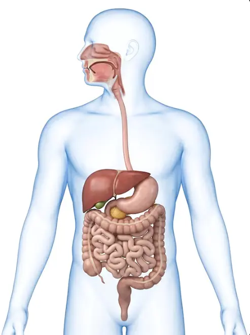

🎯 Tujuan pembelajaran
- Menjelaskan urutan organ yang dilalui makanan.
- Membedakan pencernaan mekanik dan kimiawi.
- Menghubungkan organ dengan proses, zat yang berperan, dan hasilnya.
- Menerapkan konsep pencernaan pada situasi sehari-hari.
Sistem tubuh manusia
Ikuti perjalanan makanan dari mulut hingga dikeluarkan. Bangun model hubungan organ, proses, zat yang berperan, dan hasil pencernaan.
Mode penggunaan
Tahap 1
Identitas sesi
Prasyarat • Mini game
Lengkapi setiap rantai: Makanan → Nutrisi → Fungsi.
Tahap 2
Fenomena
Beberapa jam kemudian, bentuknya berubah dan zat gizinya dapat masuk ke dalam tubuh. Di bagian mana sebagian besar zat gizi diserap?
Prediksi dulu
Minta beberapa siswa menjelaskan alasannya. Jangan membuka jawaban final dulu.
Tahap 3
Perjalanan makanan

Bagian 1
Setelah mengamati usus halus, apakah prediksimu masih sama?
Tahap 4
Konsep utama
Pencernaan adalah proses memecah makanan menjadi zat yang lebih sederhana agar dapat diserap dan digunakan oleh tubuh.
Bangun model
Gunakan model ini untuk menjelaskan apa yang terjadi, bukan sekadar menghafal nama organ.
Organ 1
Hasil pencernaan
Tahap 5
Analisis • Integrasi konsep
Rani makan nasi, telur, dan makanan berminyak. Pilih jalur yang paling tepat untuk setiap zat makanan.
Transfer konsep: Jika permukaan penyerapan usus halus berkurang drastis, hasil pencernaan dari menu Rani yang paling mungkin terganggu penyerapannya adalah...
Analisis kasus • Bukti → Mekanisme → Transfer
Pilih jawaban terlebih dahulu, lalu kunci. Setiap langkah maksimal dua kali: satu jawaban awal dan satu kesempatan revisi. Jawaban benar tidak ditampilkan setelah percobaan pertama.
Evaluasi model • Temukan dan perbaiki kesalahan
Langkah 1 — Bagian mana yang salah?
Langkah 2 — Pilih perbaikan model yang tepat.
Langkah 3 — Jika aliran empedu ke usus halus terganggu, prediksi yang paling logis adalah...
Tahap 6
Tahap 7
Pada bagian mana kamu masih mengalami kesulitan?
Seberapa yakin kamu memahami materi?
Refleksi tersimpan pada sesi ini dan dapat dikirim ke guru.
Belum pernah dikirim.